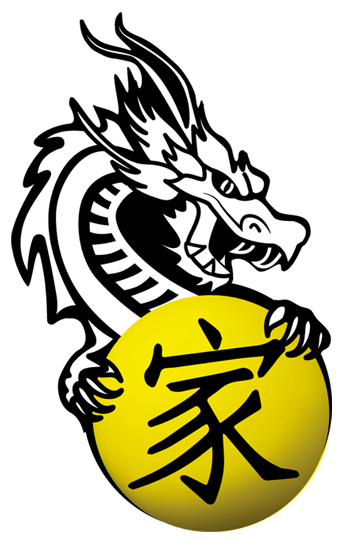

La disciplina y el control del cuerpo al siguiente nivel. Esta alternativa es ideal para espíritus perfeccionaras y exigentes que busquen ponerse a prueba física y mentalmente. La práctica del kung fu puede ayudarnos a: Asegurar un riego sanguíneo saludable al cerebro. Aumentar la capacidad pulmonar. Mejorar la función de nervios y músculos. Aumentar la fuerza y la elasticidad de los músculos del corazón. Fortalecer la función del sistema digestivo. Mejorar la circulación sanguínea.

Para espíritus combativos que buscan poner a prueba su convicción, resistencia y perseverancia. Compuesta por técnicas de golpes (de puño y pierna) y de proyección (lucha) es la alternativa ideal para quienes busquen desatar el máximo de su poder. El boxeo chino es un deporte que tiene innumerables beneficios para el cuerpo y mente, recordando que cualquiera puede participar, no tiene que tener nada especial o ser super fuerte, sólo necesita un sitio para entrenar con un instructor capaz. Mayor flexibilidad Fuerza y Resistencia Adelgazamiento y Tonificación Fortalece el Sistema Inmunitario Respeto y auto-control Coordinación Física

Para niños, niñas y adolescentes a partir de los 5 años. Es la actividad perfecta para templar la disciplina y conseguir un dominio del cuerpo admirable. A través del juego, el Kung Fu logra estimular capacidades físicas en el niño ya que ayuda a mejorar desde su equilibrio, hasta sus patrones motores básicos, mejorando su coordinación, su flexibilidad, su resistencia o su capacidad de reacción. - Socialmente les ayuda a relacionarse y a compartir experiencias y entrenamientos con otros compañeros. - Además la práctica del Kung Fu ayuda a los niños a comer sano y a combatir la obesidad infantil quemando calorías con su práctica.
El gimnasio de la academia funciona tanto para quienes deseen venir con su meta y pelear por ella como para quienes quieran complementar cualquiera de nuestras actividades de adultos para multiplicar todos los beneficios de ser un artista marcial. Los principales beneficios son: el aumento de la fuerza y la resistencia, la disminución del peso corporal, así como la necesidad de seguir una alimentación equilibrada."Todo ello aporta mejor funcionalidad y adaptación a las tareas del día a día, evitando caídas y accidentes.
Es la alternativa ideal para personas que busquen ponerse en forma y quemar calorías en movimiento Una de sus principales ventajas es que se adaptan completamente a las condiciones físicas de cada persona, por eso resulta muy efectivo como entrenamiento personal: mejora la movilidad corporal, la agilidad y el equilibrio, desarrolla la salud cardiovascular, corrige la postura, fortalece la masa muscular
Alude a una diversidad de técnicas habitaulamnete relacionadas con la medicina china tradicional, la respiración y el ejercicio físico. El Chi Kung que se practica generalmente con objetivos orientados al mantenimiento de la salud, pero en lagunos casos, espacialmnete en China, se puede prescribir con objetivos terapéuticos específicos.
Es una forma de danza tradicional de la cultura China y en otros países asiáticos, los artistas imitan los movimientos de un león, para atraer la buena fortuna y la suerte. Esta danza se realiza generalmente en celebraciones, como en el Año nuevo Chino. Esta practica requiere de fuerza, agilidad y potencia de piernas, sumado a una gran coordinación y concentración, ya que el león se maneja entre dos personas.